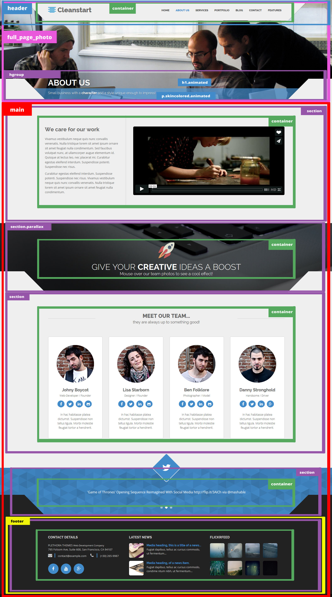

We got you covered!
All you need to know about the gears in this machine!
Cleanstart Overview
Cleanstart is a multipurpose but mainly business oriented HTML5 Template, built to serve as a foundation for your web projects. It is based on Twitter Bootstrap (check out BS excellent documentation), the front-end development framework with a steep learning curve that changes the way you develop sites. Cleanstart makes real use of {LESS}. It comes with a style.less file that tries to use all the power of {less} and bootstrap combined. Cleanstart is based on fine typography and large photography. It uses subtle animations & a sticky header effect.
To use the template you have to be familiar with HTML & CSS. The demo is self-explanatory and you can easily study the HTML files to discover how to customise the templates to your needs. This documentation covers some basics to help you get started... If you are a web developer you are about to boost your development workflow!
Responsive Grid & Main Layout
Cleanstart uses Twitter Bootstrap to build the responsive grid. You should study it if you aren't familiar already. Of course it also uses all of bootstrap to style HTML elements so it is a good idea to study all of bootstrap capabilities.
The main layout of the template can be summarized in the next picture:
Main sections
The main section of every page consists of sections that can be transparent, dark or skin-colored. To add the triangles on top of a section you just need to add some HTML.
For example to create a dark section with triangles on top:
<section class="dark_section">
<div class="container triangles-of-section">
<div class="triangle-up-left"></div>
<div class="square-left"></div>
<div class="triangle-up-right"></div>
<div class="square-right"></div>
</div>
<div class="container">
...content...
</div>
</section>
If a dark or parallax section is followed by another dark section then you have to add class .following_dark to the second section.
<section class="dark_section">
...content...
</section> <section class="dark_section following_dark">
<div class="container triangles-of-section">
<div class="triangle-up-left"></div>
<div class="square-left"></div>
<div class="triangle-up-right"></div>
<div class="square-right"></div>
</div>
<div class="container">
...content...
</div>
</section>
Parallax Section
To create a parallax section you have to assign .parallax to a section and put a background-image.
<section class="parallax call_to_action" style="background-image:url(images/parallax.jpg)">
<div class="overlay">
<img alt="responsive" src="images/rocket_trans.png">
<h3>give your <strong>creative</strong> ideas a boost</h3>
<h4>Mouse over our team photos to see a cool effect!</h4>
</div>
</section>
NOTICE: you cannot put triangles on top of a parallax section.
Before & After Section
To create a horizontal teaser with a "before & after" feature, assign .twentytwenty-container to a div and put 2 images inside.
<section class="horizontal_teaser"> <div class="container">
<div class="row">
<div class="col-sm-12 col-md-4 horizontal_teaser_left">
<h3>Before and After!</h3>
<p>Vivamus vestibulum neque quis nunc convallis venenatis. Nulla tristique lorem sit amet ipsum ornare sit amet feugiat nulla condimentum. Sed faucibus volutpat nunc, at ullamcorper augue elementum id. Quisque at lectus leo, nec placerat mi. Curabitur egestas eleifend interdum. Suspendisse potenti. Suspendisse nec risus. </p>
<p>Vivamus vestibulum neque quis nunc convallis venenatis. Nulla tristique lorem sit amet ipsum ornare sit amet feugiat nulla condimentum. Sed faucibus volutpat nunc, at ullamcorper augu. </p>
</div>
<div class="col-sm-12 col-md-8 horizontal_teaser_right">
<div class="twentytwenty-container">
<img src="images/img_before.png" />
<img src="images/img_after.jpg" />
</div>
</div>
</div>
</div>
</section>
Portfolio, Gallery & Isotope Filter
The Portfolio Page uses the Isotope v1.5.25 jQuery plugin to filter the portfolio items according to their categories. The section has a class of portfolio_strict that styles all the portfolio items to a certain 320px height.
To create the row with the filters:
<ul class="portfolio_filters">
<li><a href="#" data-filter="*">show all</a></li>
<li><a href="#" data-filter=".cat_artists">artists</a></li>
<li><a href="#" data-filter=".cat_people">people</a></li>
<li><a href="#" data-filter=".cat_travel">travel</a></li>
<li><a href="#" data-filter=".cat_poetic">poetic</a></li>
</ul>
Every portfolio item must have a coresponding class in order to respond to the filtering.
<div class="cat_people col-xs-12 col-sm-6 col-md-4 col-lg-4">
<div class="portfolio_item"> <a href="portfolio_item.html">
<figure style="background-image:url(images/portfolio/t5.jpg)">
<figcaption>
<div class="portfolio_description">
<h3>The CleanStart Project</h3>
<span class="cross"></span>
<p>People</p>
</div>
</figcaption>
</figure>
</a> </div>
</div>
The Masonry Gallery Page uses the Masonry layout mode of Isotope v1.5.25 jQuery plugin to arrange the portfolio items according to their dimensions. The section has a class of portfolio_masonry which does not restrict the <div class="portfolio_item"> height.
Less, CSS & Skins
Cleanstart makes heavy use of LESS to style its content but you may as well work with CSS. The files responsible for the styling are in the "twitter-bootstrap" & the "less" folders while the final compiled to CSS stylesheet "style.css" is in the css directory. In "style.less" we import "bootstrap.less", in order to take advantage of its styles, helper classes and mixins, and the "custom_variables.less" which is Bootstrap "variables.less" that we copied and altered in order to override the original variables and make our custom bootstrap skins. This way we leave Bootstrap unharmed.
- less folder
- less/custom_variables.less
- less/style.less
- less/mainmenu.less
- css folder
- style.css
- mainmenu.css
- animate.css
- imagelightbox.css
- simpletextrotator.css
- _style_switcher.css
- style.css
- style-blue-default.css
- style-golden.css
- style-purple.css
To change the skin you have to "call" the style-...css of your choice from the css folder
<link href="css/style-golden.css" rel="stylesheet" type="text/css">
...or even better, assign the @brand-primary variable to the color of your choise and recompile the styles.less file.
You can use a LESS compiler of your choise. We use Crunch.
Header
There are two main layouts for the header section:
- The default layout with the logo to the left & the menu to the right.
- The centered layout with the logo and the menu aligned to the center.
There is also the capability to add a top-toolbar in the header in either layout. An example is the Contact page.
The default layout is presented in the Homepage & the majority of the demo pages while the centered version can be seen at the Homepage Alternative demo page. The centered version of the header can be achieved by applying the centered class to the <header> element.
<header class="centered"> ... </header>
Logo Area
The logo area has a width of 315px by default. It has an image and a title. Any one of those can be left out. The image is 100x69px but it is styled to 26px height with CSS in order to show better on retina monitors. Of course any settings of those mentioned above can be changed to fit your needs, just search for .logo at style.less or style.css
Sticky Header Effect
You probably already noticed that the header is sticky as you scroll-down. The effect can be achieved by assigning the sticky_header class on the body tag.
<body class="sticky_header">
Mega Menu
Cleanstart uses the "Wonderful CSS3 Flat Menu" with some small modifications. The styling is done by mainmenu.css file. Below is the main markup:
<div id="mainmenu" class="menu_container">
<label class="mobile_collapser">MENU</label> <!-- Mobile menu title -->
<ul>
<li class="active"><a href="index.html">Home</a></li> <!-- Active Menu Item -->
<li><a href="about_us.html">About Us</a></li> <!-- Simple Menu Item -->
<li><a href="...">...</a></li>
... </ul> </div>
To create a simple dropdown menu:
dmui_dropdown_block - Main dropdown container for any dropdown menu typedmui-submenu - multilevel menu list <li>
<a href="#">Simple dropdown menu</a>
<div class="dmui_dropdown_block">
<ul class="dmui-submenu">
<li><a href="...">...</a></li>
...
</ul>
</div>
</li>
To create a multilevel dropdown menu:
has-dropdown - li items which contain child submenu should have this class<li>
<a href="#">Multilever dropdown menu</a>
<div class="dmui_dropdown_block">
<ul class="dmui-submenu"> <!-- First sublevel -->
<li><a href="...">...</a></li>
...
<li class="has-dropdown">
<a href="...">...</a>
<ul class="dmui-submenu"> <!-- Second sublevel -->
<li><a href="...">...</a></li>
...
</ul>
</li>
</ul>
</div>
</li>
To create a mega dropdown menu:
dmui-col - content column To set the column widths add the one of the following class names to the block column:
span1 - width: 100%; span2 - width: 50%; span3 - width: 33%; span4 - width: 25%;<li><a href="#">MEGA dropdown menu</a>
<div class="dmui_dropdown_block full_width">
<div class="dmui-container">
<div class="dmui-col span3">
<div class="dmui-container">
<ul class="dmui-submenu">
<li><a href="...">...</a></li>
...
</ul>
</div>
</div> <div class="dmui-col span3">
...
</div> <div class="dmui-col span3">
...
</div>
</div>
</div>
</li>
Flexslider
The Flexslider has a height of 580px by default and is presented at the Homepage and the Portfolio Item pages and is powered by jQuery FlexSlider v2.0. The HTML markup to create the slider is the following:
<section id="slider_wrapper" class="slider_wrapper full_page_photo">
<div id="main_flexslider" class="flexslider">
<ul class="slides">
<li class="item" style="background-image: url(images/4.jpg)">
<div class="container">
<div class="carousel-caption">
<h1>a <strong>flexible</strong> theme<br>
you can <strong>trust</strong> & <strong>build upon</strong>!</h1>
<p class="lead skincolored">clean<strong>start</strong> is based on <strong>good typography</strong> and <strong>large photography</strong>, serving as a foundation for your creative projects. Feel free to browse its templates and discover its features.</p> </div>
</li>
<li class="item" style="background-image: url(images/5.jpg)">
...
</li>
<li class="item" style="background-image: url(images/6.jpg)">
...
</li>
<li class="item" style="background-image: url(images/7.jpg)">
...
</li>
</ul>
</div>
</section>
The initialization & settings can be found at js/cleanstart_theme.js
The photos are put as backgound-image and styled as background:cover in order to always fit optimaly in the space provided. You can change the height of the slider_wrapper to fit your needs while 480px is the default.
In every slide there is the carousel-caption that consists of a large title h1 and a small subtitle p.lead. You can style those to black background (by default) or skin-color background by assigning the skincolored class.
<div class="carousel-caption">
<h1>a <strong>flexible</strong> theme<br> you can <strong>trust</strong> & <strong>build upon</strong>!</h1>
<p class="lead skincolored">clean<strong>start</strong> is based on <strong>good typography</strong> and <strong>large photography</strong>, serving as a foundation for your creative projects. Feel free to browse its templates and discover its features.</p> </div>
Full Page Photo & Video
The full-page photo has a height of 480px by default and the actual photo is put as backgound-image and styled as background:cover in order to always fit optimaly in the space provided. There is also a call_to_action section consisting of a h3 and a h4 which are animated and have a black-alpha background by default. This can be changed to skin-color alpha just by adding the skincolored class to either one of them.
<div class="full_page_photo" style="background-image: url(images/about_us.jpg);">
<hgroup>
<div class="hgroup_title animated bounceInUp"><div class="container"><h1 class="">About us</h1></div></div>
<div class="hgroup_subtitle animated bounceInUp skincolored"><div class="container"><p>Small business with a <strong>character</strong> and a style unique enough to impress!</p></div></div>
</hgroup>
</div>
You can also put background video in this area, which you should then assign id map. You should link to a video-file in .mp4 format in the data-video attribute. You should also include some scripts in your page. You can find more at BigVideo.js site.
<div class="full_page_photo" id="video" data-video="images/video_HD.mp4">
<hgroup>
<div class="hgroup_title animated bounceInUp"><div class="container"><h1 class="">About us</h1></div></div>
<div class="hgroup_subtitle animated bounceInUp skincolored"><div class="container"><p>Small business with a <strong>character</strong> and a style unique enough to impress!</p></div></div>
</hgroup>
</div>
The scripts:
<script src="js/jquery-ui-1.8.22.custom.min.js"></script>
<script src="js/jquery.imagesloaded.min.js"></script>
<script src="http://vjs.zencdn.net/c/video.js"></script>
<script type="text/javascript" src="js/bigvideo.js"></script>
<script type="text/javascript" src="js/bigvideo_init.js"></script>
Styled Elements "Shortcodes"
There are some groups of HTML elements which have a default styling but this styling can be changed just by adding some classes.
For example the section_header has a default styling but accepts elegant, fancy and centered classes. The basic markup is:
<h2 class="section_header"><b>Default</b>header<small>and its descrition</small></h2>
Default header and its descrition
<h2 class="section_header elegant"><b>Elegant</b>header <small>and its descrition</small></h2>
Elegant header and its descrition
<h2 class="section_header fancy centered"><b>Fancy</b>centered <small>and its descrition</small></h2>
Fancycenteredand its descrition
You can see more examples at the Services & the Design Elements page.
Footer & Contact Page
The FLICKR widget settings that appears in the footer can be found in js/cleanstart_theme.js
To edit the SVG background of the twitter area, follow this link: http://svgeneration.com/generate/GPlay?height=8&width=8&background=f0f0f0&overlay=000000&weight=3&padding=0&
The Contact Page has a Working Ajax & PHP Contact Form which you can set in the contact.php and contact_form.js files.
The google map in the contact page uses the Google Maps Api v3 and it will not work as is. It wil show you the following message:
Google has disabled use of the Maps API for this application.
The provided key is not a valid Google API Key, or it is not authorized for the Google Maps
Javascript API v3 on this site. If you are the owner of this application,
you can learn about obtaining a valid key here:
https://developers.google.com/maps/documentation/javascript/tutorial#api_key
So Google tells you that you have to get your own API Key for the map to work. It is easy and you can follow the directions shown at this tutorial. After you get your own API Key, scroll down the code at the bottom of the contact.html file and follow the instructions. You can even style your map to different colors at the google_map.js file as shown for example at the Snazzy Maps!
Animations
Cleanstart uses the Animate.css (go play a little...) library to show css animations and wow.js to reveal them on scroll. In order to animate an object you have to assign animated class to the element and the proper animation class from Animate.css. If you want to reveal this object on scroll, replace "animated' with the wow class.
For example, the current section icon animation (refresh your browser window now [F5] if you missed it) is achieved by...
<h1 id="animations" class="page-header"><i class="fa fa-magic wow bounceInLeft"></i> Animations</h1>
Animations are a nice addition to a theme but remember not to overuse them!
Support & Credits
Plethora Themes offers support online through its support suite but you have to register first with your Themeforest Purchase code.
The photos of the live preview are mainly (CC 1.0) & (CC BY 2.0) from:
Unsplash, DeathtoStock Wired, D. Sharon Pruitt, HALDANE MARTIN, Dominic Alves, PicJumbo, University of Salford Press Office
The Services Section Photos used for comparing with the twenty-twenty plugin are works of Aris Espanola who kindly let me use his work. Thanks Ari!
The Portfolio Photos and Illustraions are works of Maria Papageorgiou, Vasiliki Koumaridou, and Bend. THANX to all the creators that have given their approval for their work to be displayed at the Demo.
The Video on the Blog, Photos on the Portfolio and the Flickr account photos are works of our dear friend Dimitra Giannouka
The Background Video is from "FLOCK" (theflockcollective.com) http://vimeo.com/71409522
The Apple logo and iPhone are trademarks of Apple Inc., registered in the U.S. and other countries. All logos are trademarks of their respective owners, registered in the U.S. and other countries.